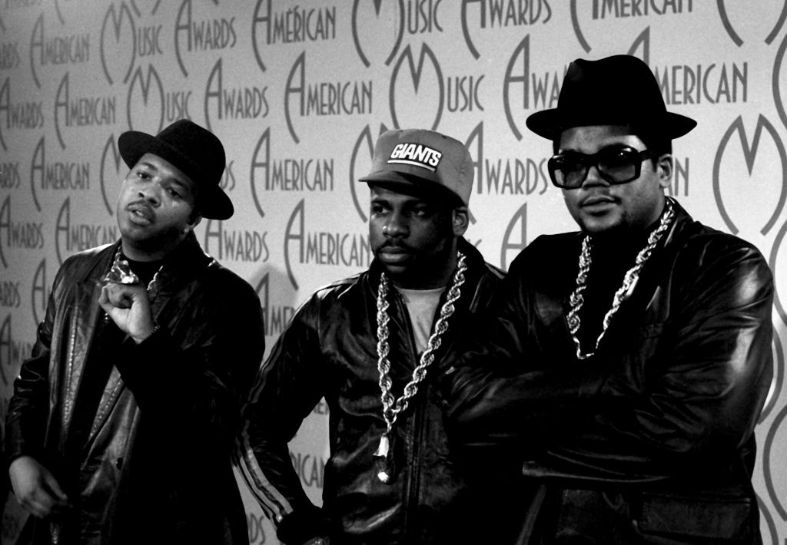
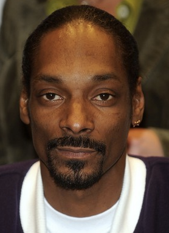

Hip-hop began as a cultural movement in the streets of New York during the 1970’s (Rose, 1994). Much more diverse than what the media today perceives it to be, hip-hop is expressed through a variety of artistic and cultural mediums, including, but not limited to, music, dance, graffiti, and fashion (Marriot, 1990). Of the various art forms expressed through hip-hop culture, hip-hop music began to develop as a local underground art form, with lyrics that spoke out on urban poverty, racism, and a growing sense of economic abandonment in African-American inner city neighborhoods (Rose, 1994; George, 1998). Thus, hip-hop became a voice for African-American youth, who saw it as a way to express the social, economic and political realities of their lives (Alridge & Steward, 2005).
Please feel free to add other rappers below
Tupac Amaru Shakur ( TOO-pahk shə-KOOR; born Lesane Parish Crooks, June 16, 1971 – September 13, 1996), also known by his stage names 2Pac and Makaveli, was an American rapper and actor. He is considered by many to be one of the greatest rappers of all time

The success of Notorious B.I.G. needs little introduction. The rapper has been credited as being the voice that influenced a generation, and while his rivalry with 2Pac would stir controversy in the rap world, his music continues to live on.

Shawn Corey Carter (born December 4, 1969), known professionally as Jay-Z (stylized as JAY-Z), is an American rapper, songwriter, producer, entrepreneur, and record executive.

Dre, Eazy-E, DJ Yella and MC Ren, he rocketed to fame in the late 1980s as a member of the hard-hitting gangsta rap group, N.W.A After breaking off on his own in '89, Cube has put together a successful recording and acting career, having appeared in the films Friday (1995), Barbershop (2002) and 21 Jump Street (2012).

West Coast rap legend Snoop Dogg has come a long way since being discovered by Dr. Dre in the early 1990s. As impressive as he was when guesting on Dre's The Chronic in 1992, few could have guessed he'd go on to global fame, tens of millions of record sales and a career in movies and TV.
